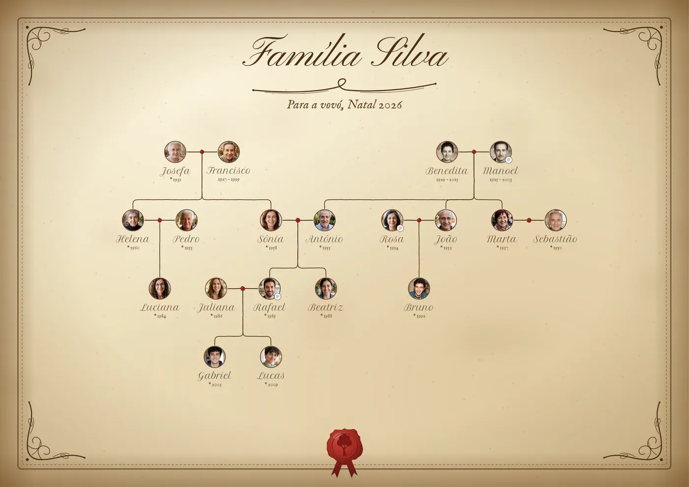
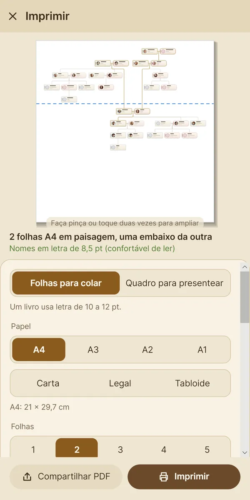

Como imprimir sua árvore genealógica em tamanho grande, em 50×70 cm
Uma árvore genealógica fica linda de verdade em tamanho grande, emoldurada na sala ou na casa dos avós. Este guia explica como escolher o tamanho, deixar todos os nomes legíveis e mandar imprimir sem surpresas.

1. Escolha o tamanho
O mais prático é imprimir a árvore no tamanho de uma moldura pronta, para não precisar mandar fazer uma sob medida. As mais fáceis de achar são 30×40, 40×50 e 50×70 cm. O Ramo tem todas, além de A4, A3, A2 e A1.
| Tamanho | Para quê | Quantas pessoas, aproximadamente |
|---|---|---|
| A4 | A impressora de casa | Até umas 35 |
| A3 ou 30×40 cm | Um quadro médio ou uma mesa | Até umas 50 |
| 40×50 cm | Um quadro de parede | Até umas 60 |
| 50×70 cm | O quadro grande da sala | Até umas 90 |
Os números valem para cartões com foto e nomes de uns 9 pontos, e dependem muito do formato da árvore. Não precisa calcular: o Ramo mostra o tamanho exato dos nomes antes de imprimir.
2. Prepare o quadro no Ramo
- Abra a árvore, toque no menu e escolha Imprimir.
- No alto, escolha Quadro para presentear e, no papel, 50×70 cm (ou o tamanho da sua moldura).
- Em Disposição da árvore você vê, embaixo de cada opção, o tamanho dos nomes. A estrela ★ marca a que deixa os nomes maiores.
- Escreva o título (“Família Silva”) e, se quiser, uma dedicatória (“Para a vovó, Natal 2026”).
- Escolha o estilo: Pergaminho, Papel e tinta, Jardim, Álbum… Cada um tem sua moldura, suas cores e sua fonte.


3. Deixe todos os nomes legíveis
Como referência: 8 pontos dá para ler de perto, 10 a 12 se leem bem com o quadro na mão ou em cima de uma mesa, e para ler pendurado na parede é melhor passar de 14. Se os nomes ficarem pequenos, no Ramo você pode:
- Testar outra disposição: as da esquerda para a direita costumam ajudar muito em famílias muito largas.
- Tirar dos cartões o que não precisar (a foto, os anos ou os sobrenomes). O Ramo mostra quanto cada coisa ganha.
- Aproximar os cartões ou usar a margem junto à moldura fina.
- Passar para um tamanho maior, ou fazer um quadro por ramo (o lado do pai e o lado da mãe).
Abra a prévia em tela cheia e amplie com os dedos: o que você vê é o que vai sair.
4. Salve o PDF e leve para imprimir
Toque em Compartilhar PDF e mande para o seu e-mail ou salve em um pen drive. O PDF do Ramo é vetorial: os nomes e as linhas ficam nítidos em qualquer tamanho.
Na gráfica rápida, na copiadora ou em um site de impressão de pôsteres, peça:
- Impressão em tamanho real (100%), sem “ajustar à página”.
- Papel fotográfico fosco ou couché fosco de 170 a 250 g: sem reflexo atrás do vidro.
- Corte no tamanho da moldura, se a folha for maior.
E se eu quiser imprimir em casa?
Escolha Folhas para colar: o Ramo distribui a árvore em várias folhas A4 com marcas para recortar e juntar, e mostra antes quantas folhas são necessárias e o tamanho dos nomes. Isso também está na versão grátis.
Os quadros para presentear fazem parte do Ramo completo (um único pagamento). Com a versão grátis você pode imprimir a árvore em folhas, com uma pequena marca “Feito com Ramo”.
Mais guias